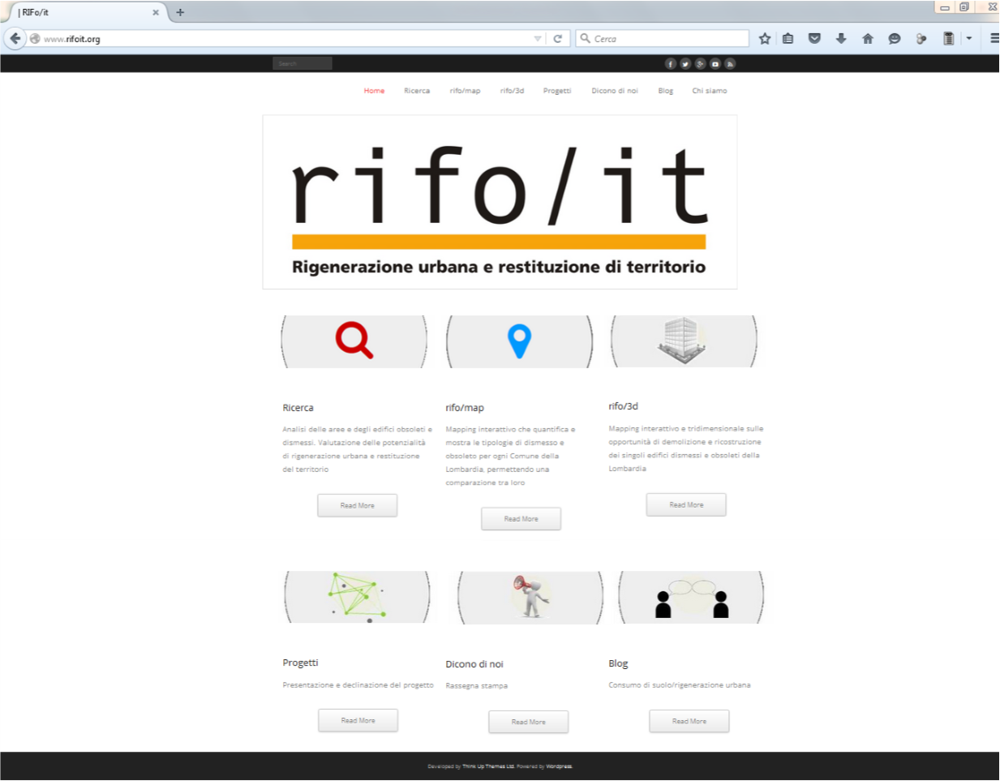
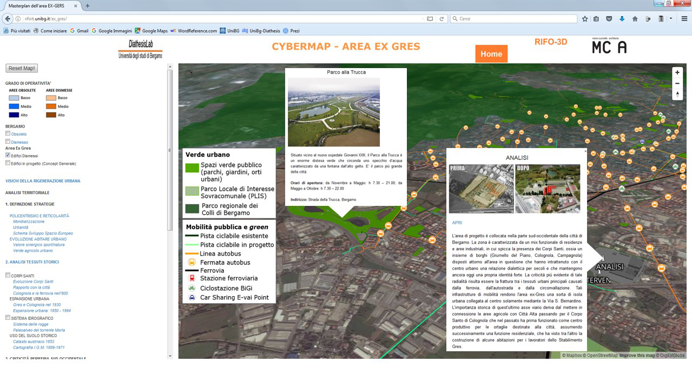

| CYBERMAPPING DELL’AREA EX-GRES | |
|  La homepage del sito www.rifoit.org |
La redazione del Concept generale del Masterplan
dell’Area ex-Gres, ha previsto la creazione di una pagina web, pubblicata
all’interno del sito www.rifoit.org dove sono stati raccolti i
prodotti della prima fase della ricerca RIFO, realizzata dal DiathesisLab, che ha monitorato tutti
gli edifici ERP obsoleti (costruiti tra il 1949 e il 1980 e identificati in base alle norme edilizie che hanno
regolato la qualità delle costruzioni) e le aree dismesse in
Lombardia, tra cui due sistemi cartografici denominati Rifomap e Rifo3D. Il
primo è uno strumento di mapping esplorativo, che visualizza la distribuzione delle aree dismesse e
degli edifici ERP obsoleti a livello comunale, consentendo di visualizzare per
ciascun comune una scheda di dettaglio e, mediante l’uso di menù a tendina, di
effettuare la ricerca per regione, provincia o comune, così come eseguire
alcune elaborazioni dei dati; il secondo è un mapping
interattivo, su base Google Earth, che, a livello di capoluogo, mostra le aree dismesse e l’ERP obsoleto, consentendo,
tramite la navigazione, di vedere nel dettaglio la composizione degli edifici
attraverso la rappresentazione tridimensionale degli edifici, oltre a poter
visualizzare mediante l’uso di pop-up le informazioni dettagliate sul calcolo
degli indici di demolizione e ricostruzione. In occasione della realizzazione del Concept generale, il sistema Rifo3D è stao utilizzato quale piattaforma implementabile da una cybermap dedicata al progetto ex-Gres, quale sistema di comunicazione aperto agli stekolders in un primo momento, ma pensata per costituire successivamente uno strumento di partecipazione dei cittadini. Nello specifico, si consente all’utente di accedere ad approfondimenti informativi mediante pop-up interattivi, e, tramite collegamento ipertestuale, di aprire la pagina dedicata al progetto ex-Gres, accedendo alla cybermap. Quest’ultima mostra nel dettaglio ogni singolo edificio in restituzione tridimensionale e permette la consultazione delle linee strategiche del Concept generale - città reticolare e policentrica - oltre che della documentazione prodotta durante l’analisi territoriale, che ha fatto emergere i caratteri specifici della periferia di Bergamo. All’interno della mappa, diversi strati informativi mostrano la situazione attuale della periferia sud-occidentale di Bergamo, in special modo verde pubblico e mobilità pubblica e green, considerati elementi strategici per la progettazione urbana sempre più legata a concetti di benessere e sostenibilità; inoltre, gli strati relativi agli edifici ERP obsoleti e alle aree dismesse della zona ricollegano la rigenerazione dell’area ex-Gres a un discorso più ampio di uso del suolo e restituzione del suolo consumato, anche questi aspetti considerati cruciali per il futuro delle città. Infine, nella sezione dedicata alle strategie di intervento previste dal progetto, è possibile consultare i documenti riguardanti gli elementi topici del Masterplan (la planimetria del progetto, la sloway, la connessione dell’area ex-Gres al tessuto urbano, il potenziale ecologico) oltre che il diagramma funzionale del progetto. |
|  La cybermap dell'area ex-Gres |
|